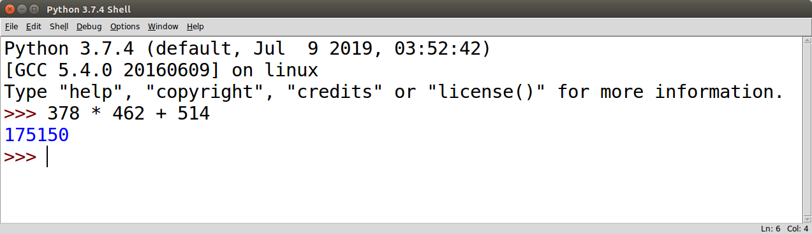
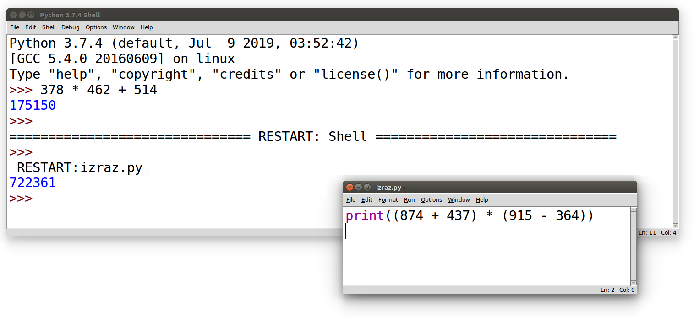

Основне аритметичке операције и примена¶
Рачунар или компјутер (енгл. computer) је справа која рачуна тј. справа која је направљена тако да може веома брзо и ефикасно да изводи рачунске операције над бројевима. Рачунање се назива и аритметика (од грчке речи ἀριθμός тј. аритмос која значи број, бројање, рачунање), а рачунске операције се називају и аритметичке операције.
Сабирање, одузимање, множење¶
О аритметичким операцијама и њиховој примени си учио/учила још у нижим разредима.
Основна аритметичка операција је сабирање. Збир бројева 3 и 5 се у математици представља као 3 + 5. У програмском језику Python користи се готово идентичан запис
3 + 5.Поред сабирања можемо разматрати одузимање. Разлика бројева 8 и 2 се у математици представља као 8 - 2. У програмском језику Python користи се готово идентичан запис
8 - 2.Још једна од основних операција је и множење. Производ бројева 4 и 6 се у математици представља као 4 · 6. У програмском језику Python множење се означава помоћу оператора
*и производ бројева 4 и 6 се записује као4 * 6.
Програмски језик Python, наравно, уме и да дели, да израчунава остатак при дељењу и цео део количника и много штошта друго. О овим операцијама ћемо говорити на неком од наредних часова.
Приметимо да смо око оператора куцали размаке (на пример, 3 +
5, 8 - 2 или 4 * 6). Ти размаци нису неопходни и исправно
је написати и 3+5 или 4*6. Програмери воле да куцају размак
око сваког оператора (знака операције) да би добили текст програма
који лепше изгледа и који се лакше може прочитати.
Ако на свом рачунару покренеш интерпретатор за програмски језик
Python, вредност неког израза (на пример, 3 + 5 или 4 * 6)
можеш израчунати тако што тај израз просто укуцаш (иза знакова
>>>) и притиснеш тастер Enter. На пример,
Python 3.7.4 (default, Jul 9 2019, 03:52:42)
[GCC 5.4.0 20160609] on linux
Type "help", "copyright", "credits" or "license" for more information.
>>> 3 + 5
8
>>> 4 * 6
24
Међутим, за вежбу ти чак није потребно да инсталираш Python на свом рачунару, већ и у овом случају програме можеш уносити и у поља која се налазе на страницама овог интерактивног приручника. У та поља се уносе комплетни програми (додуше, они ће у почетку бити прилично кратки) и стога, да би се одштампала вредност неког израза, рачунару мораш некако рећи да он ту вредност одштампа. Штампај се на енглеском језику каже print, па се онда вредност израза може добити на следећи начин.
Подесили смо да се овај програм покрене чим се ова страница учита и са десне стране можеш видети резултате његовог израчунавања (одштампане бројеве 8 и 24).
Пробај сада да прилагодиш претходни програм тако да исписује разлику бројева 174 и 83 и производ бројева 24 и 36. Када направиш измене програм покрени дугметом Покрени програм. Ако је све урађено како треба, требало би да видиш резултате 91 и 864.
Рад из командне линије и писање скриптова¶
Покретањем интерпретатора за Python (на пример, покретањем окружења Python IDLE), приказује се командни прозор у који се могу уносити изрази чија се вредност одмах израчучнава и приказује.
Ово је погодно само за веома кратка израчунавања. У случају када желимо да вршимо мало сложенија израчунавања, обично пишемо једноставне програме који се називају и скриптови. Писање новог скрипта у окружењу IDLE започињемо командом менија File → New File, након чега се отвара едитор програмског кода у који уписујемо наш скрипт. Када је скрипт написан, покрећемо командом менија Run → Run Module или пречицом на тастатури F5. Пре него што се скрипт изврши, неопходно га је сачувати (уобичајено је да то буде у датотеци са екстензијом .py).
Изрази у скрипту се израчунавају, али се њихова вредност не приказује
аутоматски. Ако желимо да прикажемо вредност неког израза, потребно је
дан употребимо наредбу print. Сваки пут када се скрипт покрене,
резултати његовог рада се приказују у командном прозору.
Рецимо и да је скриптове могуће креирати помоћу било ког едитора
чистог текста (могуће је користити и Notepad) и након чувања могуће
их је покретати из командне линије оперативног система (најчешће
тако што се покрене команда python <ime_skripta> или python3
<ime_skripta>).
У прозоре на Петљи се уносе скриптови, који се онда покрећу дугметом
Покрени програм. Зато је за сваки жељени приказ резултата непходно
употребити наредбу print. За разлику од окружења IDLE, пре
покретања скрипта није га потребно сачувати.
Смедеревска тврђава¶
Покушај да решиш наредни, веома једноставан задатак на неколико начина:
израчунај вредност помоћу обичног калкулатора твог оперативног система;
израчунај вредност уносом израза у командну линију Python интерпретатора;
израчунај и прикажи вредност писањем једноставног скрипта у прозору који је приказан у склопу ове веб-странице;
напиши скрипт у окружењу IDLE, сачувај га и покрени.

{kind=link}
{kind=link}
Смедеревска тврђава има облик троугла страница 550m, 502m и 400m. Колики је обим тврђаве (када шеташ око тврђаве, колико ћеш метара прећи)?
Ако је исправно написан, твој скрипт треба да испише вредност 1452.
Сложени изрази, приоритет оператора и заграде¶
Некада је потребно да решавамо задатке који укључују више рачунских операција и тада можемо користити сложеније изразе, потпуно исто како смо навикли у математици. На пример, посматрајмо следећи задатак, који је преузет из једне збирке задатака из математике.
Производ збира и разлике¶
Израчунај производ збира бројева 874 и 437 и разлике бројева 915 и 364.
Уз помоћ рачунара можеш веома једноставно решити овај задатак (чак
једноставније него помоћу дигитрона тј. калкулатора). Једино је важно
да умеш исправно да запишеш израз којим се тражено израчунавање
изражава. У математици би се одговарајући израз записао као
(874+437)·(915-364). Ако се сетиш да се множење изражава знаком
* и, ако ти кажемо да у програмском језику Python можеш
употребљавати заграде на исти начин као у математици, онда ти је јасно
да претходни математички задатак можеш лако решити тако што употребиш
израз (874 + 437) * (915 - 364), тј. наредни програм (притисни
дугме Покрени програм да би се програм извршио).
Заграде су у претходном сложеном изразу неопходне, јер је приоритет операција потпуно исти као у математици (прво се израчунава оно што је у заградама, затим множење и дељење, па тек онда сабирање и одузимање).
Покушај да претходни задатак урадиш и у окружењу IDLE и то најпре тако
што ћеш израз (874 + 437) * (915 - 364) унети у командни прозор и
притиснути тастер Enter, а затим и тако што ћеш направити скрипт који
Уради наредни тест да провериш да ли си потпуно разумео/разумела досадашње излагање.
- 15
- Знак ``+`` означава сабирање, а знак ``*`` множење.
- 30
- Тачно!
- 50
- Обрати пажњу и на приоритет операција (исти је као и у математици).
- 125
- Знак + означава сабирање, а знак * множење.
Q-83: Која је вредност израза 5 + 5 * 5?
- 15
- Знак ``+`` означава сабирање, а знак ``*`` множење.
- 30
- Обрати пажњу на то да прво треба да израчунаш оно што је у заградама.
- 50
- Тачно!
- 125
- Знак + означава сабирање, а знак * множење.
Q-84: Која је вредност израза (5 + 5) * 5?
- print((184 + 72) * (273 - 194))
- Обрати пажњу на то шта је збир, а шта разлика.
- print((184 - 72) * (273 - 194))
- Тачно!
- (184 - 72) * (273 - 194)
- Да би програм исписао резултат, мораш користити print.
- print(184 - 72 * 273 - 194)
- Обрати пажњу на приоритет операција. Да ли ти требају заграде?
Q-85: Који од наредних програма израчунава и исписује производ разлике бројева 184 и 72 и разлике бројева 273 и 194.